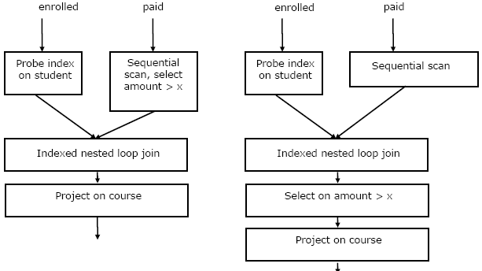

Following questions have been asked in GATE 2006 CS exam.
1) Consider the following log sequence of two transactions on a bank account, with initial balance 12000, that transfer 2000 to a mortgage payment and then apply a 5% interest.
1. T1 start 2. T1 B old=12000 new=10000 3. T1 M old=0 new=2000 4. T1 commit 5. T2 start 6. T2 B old=10000 new=10500 7. T2 commit
Suppose the database system crashes just before log record 7 is written. When the system is restarted, which one statement is true of the recovery procedure?
(A) We must redo log record 6 to set B to 10500
(B) We must undo log record 6 to set B to 10000 and then redo log records 2 and 3
(C) We need not redo log records 2 and 3 because transaction T1 has committed
(D) We can apply redo and undo operations in arbitrary order because they are idempotent.
Answer (B)
2) Consider the relation enrolled (student, course) in which (student, course) is the primary key, and the relation paid (student, amount) where student is the primary key. Assume no null values and no foreign keys or integrity constraints. Given the following four queries:
Query1: select student from enrolled where student in (select student from paid)
Query2: select student from paid where student in (select student from enrolled)
Query3: select E.student from enrolled E, paid P where E.student = P.student
Query4: select student from paid where exists
(select * from enrolled where enrolled.student = paid.student)
Which one of the following statements is correct?
(A) All queries return identical row sets for any database
(B) Query2 and Query4 return identical row sets for all databases but there exist databases for which Query1 and Query2 return different row sets.
(C) There exist databases for which Query3 returns strictly fewer rows than Query2.
(D) There exist databases for which Query4 will encounter an integrity violation at runtime.
Answer (B)
Take an example:
Table enrolled student course ---------------- abc c1 xyz c1 abc c2 pqr c1 Table paid student amount ----------------- abc 20000 xyz 10000 rst 10000 Output of Query 1 abc abc xyz Output of Query 2 abc xyz Output of Query 3 abc xyz Output of Query 4 abc xyz
Query 1 and Query 3 may return repetitive student values as “student” is not a key in relation enrolled, however query 2 and query 4 always return same row sets.
So, option (B) is correct.
3) Consider the relation enrolled(student, course) in which (student, course) is the primary key, and the relation paid(student, amount), where student is the primary key. Assume no null values and no foreign keys or integrity constraints. Assume that amounts 6000, 7000, 8000, 9000 and 10000 were each paid by 20% of the students. Consider these query plans (Plan 1 on left, Plan 2 on right) to “list all courses taken by students who have paid more than x”.

A disk seek takes 4ms, disk data transfer bandwidth is 300 MB/s and checking a tuple to see if amount is greater than x takes 10 micro-seconds. Which of the following statements is correct?
(A) Plan 1 and Plan 2 will not output identical row sets for all databases.
(B) A course may be listed more than once in the output of Plan 1 for some databases
(C) For x = 5000, Plan 1 executes faster than Plan 2 for all databases.
(D) For x = 9000, Plan I executes slower than Plan 2 for all databases.
{kind=link}
Answer (C)
Assuming that large enough memory is available for all data needed. Both plans need to load both tables courses and enrolled. So disk access time is same for both plans.
Plan 2 does lesser number of comparisons compared to plan 1.
1) Join operation will require more comparisons as the second table will have more rows in plan 2 compared to plan 1.
2) The joined table of two tables will will have more rows, so more comparisons are needed to find amounts greater than x.
4) The following functional dependencies are given:
AB → CD, AF → D, DE → F, C → G , F → E, G → A
Which one of the following options is false?
(A)CF+ = {ACDEFG}
(B)BG+ = {ABCDG}
(C)AF+ = {ACDEFG}
(D)AB+ = {ABCDFG}
Answer (C)
Closure of AF or AF+ = {ADEF}, closure of AF doesn’t contain C and G.
Option (D) also looks correct. AB+ = {ABCDG}, closure of AB doesn’t contain F.
Please see GATE Corner for all previous year paper/solutions/explanations, syllabus, important dates, notes, etc.